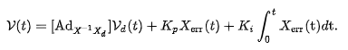

Kuka youBot Mobile Manipulator
Project Brief
The main goal of this project was to write software that plans a trajectory for the end-effector of the youBot mobile manipulator (a mobile base with four mecanum wheels and a 5R robot arm), performs odometry as the chassis moves, and performs feedback control to drive the youBot to pick up a block at a specified location, carry it to a desired location, and put it down. This was visualized in CoppeliaSim.
Best PID Control Demo

Trajectory Algorithm
There are four functions that contribute to the working trajectory algorithm: NextState, TrajectoryGenerator, ScrewTrajectory, and FeedbackControl.
Using the first-order Euler equation, the NextState function determines the robot’s configuration at the next time step.
The TrajectoryGenerator function takes in the transformation matrix of the necessary cube initial and ending waypoints and outputs a list of transformation matrices of end-effector positions in the space frame.
Each stage of the algorithm utilizes the ScrewTrajectory function which is from the modern robotics library. This function takes the starting and ending transformations of the end-effector and generates a discrete trajectory as a list of end-effector transformation matrices with the fifth-order polynomial time-scaling method.
Lastly, the FeedbackControl function is used to calculate the kinematic task-space feedforward plus feedback control law, which is written as:

Results
The following cases were tested to prove the usability and reliability of the trajectory algorithm:
-
Best
-
Overshoot
-
New Task